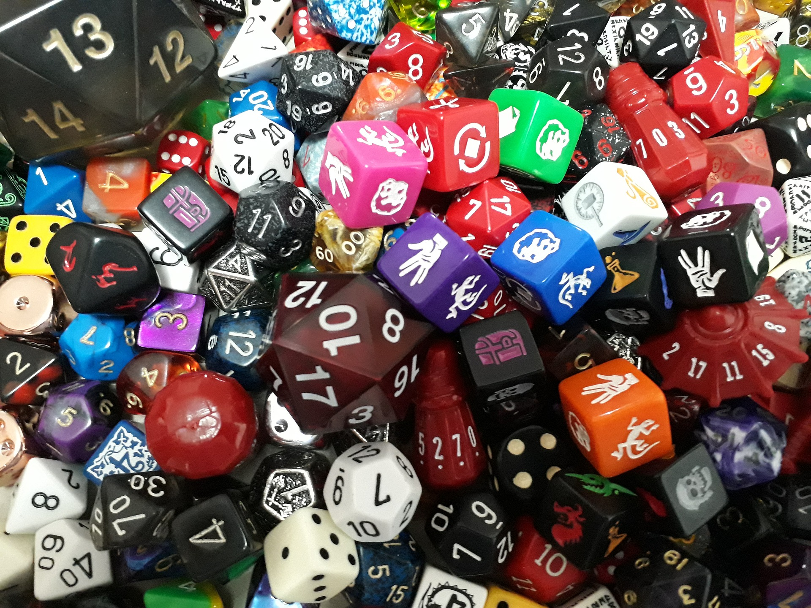

About Me
My name is Jonathan Winter, and I am learning to become a C# Software Developer. I originally went to college
to become an accountant and graduated with my bachelor of science in accounting . After a few years in the
accounting field, I have decided to change my career path to coding. I have always had a fascination with computers and
programming, and feel that this new career path is a better fit for me.
I grew up in a small town in southern Minnesota, went to school in Marshall, Minnesota, and have landed my true home up in
the twin cities. I have been living in the south metro for almost four years now and find the city entrancing. I can't wait
to keep exploring new places and find new favorites for years to come.
Past Experiences

Although my past experience is largely rooted in the accounting side of business, I feel that I will be able to translate
that well into effective code. I have worked in a few different accounting positions, but most recently have been working with
telecommunications companies and preparing financial and tax filings for them. I work closely with my clients to ensure that
deadlines are met, and that work is done in an efficient manner.
As an accountant, I had an extremely high-attention to detail and have experience in reviewing and auditing pieces of financial
information for errors. I believe that this will help me while I'm learning to become a software developer and will give me the edge
once I have started my career in the programming field.
Hobbies
"
I have many hobbies that I love sharing with my friends, including Roleplaying Games (like Dungeons and Dragons
and Pathfinder ), computer games, board games, camping, hiking, and running. I have been playing
RPG style games for many years and it has become a large part of my life recently. I love introducing new people to the world
of roleplaying and giving them an oppurtunity to use their imagination to fuel their creative side, and challenging
people to think outside the box to solve problems.
Over the summer of 2020, I started running with the intent to complete a 5k in under 30 minutes. I tried to run a little bit every
day to ensure that I was making progress towards my goal by running a little bit faster, and a little bit farther every time I got outside.
I finally accomplished my goal after two months of consistent practice and determination. I try to apply this concept to everything I do,
including trying new games, exploring new places in the twin cities, and also teaching myself to code and become a successful developer.